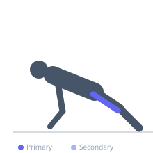
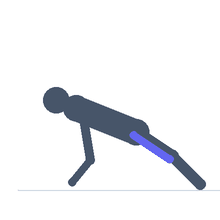

Exercise guide / Copenhagen Adduction
Copenhagen Adduction
The Copenhagen adduction exercise is a high-load hip adductor strengthening exercise performed in a side-plank position with the top foot supported on a bench or partner. The bottom leg performs adduction to lift the body or hold isometrically. It produces very high adductor longus forces compared to other adductor exercises, making it effective for groin injury prevention and rehabilitation of adductor strains. Research has demonstrated its effectiveness in reducing groin injury rates in football players.
Primary muscles
adductor longus
adductor magnus
Secondary muscles
gracilis
Stabilizers
obliques
transverse abdominis
Equipment
No Equipment (Bodyweight)


Starting position
- Lie on one side on the floor. Support the upper body on the forearm. Rest the top foot on a bench or box at hip height. The bottom leg is free below the bench.
Setup
- Use a bench or plyo box at hip height. Begin with the isometric hold version before progressing to the dynamic version.
Steps
- Step 1: Lie on your side with forearm on the floor. Rest the top foot on a bench at hip height.
- Step 2: The bottom leg hangs freely below the bench level.
- Step 3: Lift the bottom leg up to meet the top leg, using the inner thigh (adductors) of the bottom leg.
- Step 4: Hold the lifted position for 2 seconds.
- Step 5: Lower the bottom leg slowly with control. Complete reps on one side, then switch.
Coaching cues
- Focus on the slow, controlled lowering — that is the key training stimulus
- Do not let the bottom leg just drop
- Think about squeezing the inner thighs together
Breathing
- Exhale as the bottom leg lifts. Inhale on the return.
Range of motion
- Lift the bottom leg from hanging below the bench to meeting the top leg. The key is the eccentric control on the way down.
Tempo
- 2-second lift, 2-second hold, 3-second lower. 8–12 reps × 2–3 sets per side.
Common mistakes
- Using momentum or hip flexion rather than pure adduction
- Not controlling the eccentric — the lowering phase is where the injury-prevention benefit occurs
- Bench set too high, which reduces the adductor load
Safety
- High load exercise — begin with isometric holds before the dynamic version
- In acute adductor strain, start very conservatively and progress by clinical guidance
Training
- strength: 8–12 reps
- strength: 2–3 sets
- Rest: {'strength': 90}